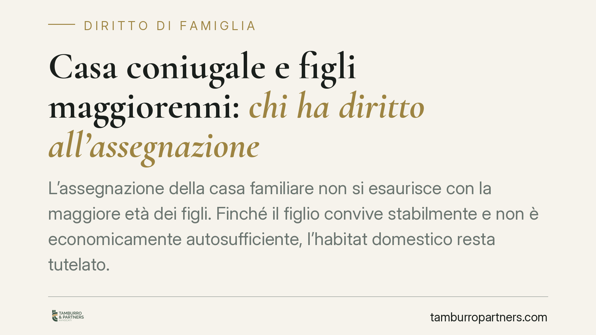

Casa coniugale e figli maggiorenni: chi ha diritto all'assegnazione
L'assegnazione della casa familiare non si esaurisce con la maggiore età dei figli. Finché il figlio convive stabilmente e non è economicamente autosufficiente, l'habitat domestico resta tutelato. Il diritto si affievolisce con l'indipendenza o il trasferimento definitivo, ma la revoca non è automatica: va chiesta al giudice, con precise regole probatorie. Ecco i criteri da conoscere.

Il caso
La questione ricorrente nelle separazioni e nei divorzi con prole ormai adulta è netta: la casa familiare resta assegnata al genitore convivente anche quando i figli hanno superato i diciotto anni?
La risposta della giurisprudenza è affermativa, ma condizionata. L'assegnazione non è un premio per il genitore né una sanzione per l'altro: è uno strumento a tutela dei figli. Finché il figlio maggiorenne continua a vivere stabilmente nell'immobile e non ha raggiunto l'indipendenza economica, l'interesse alla conservazione dell'ambiente domestico prevale. Il diritto si estingue con l'autosufficienza economica o con il trasferimento definitivo altrove.
Un dato va segnalato con onestà: alcune pronunce di merito richiamate nel dibattito pubblico (in particolare una decisione attribuita al Tribunale di Pavia n. 77/2025 e a Cass. n. 14458/2025) non risultano, allo stato, verificabili nei loro estremi e nella materia trattata. Le riportiamo come riferimenti da verificare presso le fonti primarie, senza attribuire loro principi che non siano confermati dal testo integrale.
Inquadramento normativo
Il riferimento cardine è l'art. 337-sexies c.c., che disciplina l'assegnazione della casa familiare tenendo conto prioritariamente dell'interesse dei figli. La norma non distingue tra figli minorenni e maggiorenni: ciò che rileva è la convivenza stabile e la mancata autosufficienza economica del figlio.
Sul piano dell'autosufficienza, l'orientamento consolidato è offerto dalle Sezioni Unite della Cassazione, sentenza n. 32914/2022, in tema di mantenimento del figlio maggiorenne. Le Sezioni Unite hanno chiarito che, superata una certa soglia di età, l'onere di dimostrare la persistente dipendenza economica e l'impegno concreto nella ricerca di un'occupazione grava sul figlio (e, riflessamente, sul genitore che ne invoca la tutela). Non basta l'inerzia: la cosiddetta inerzia colpevole del figlio che non si attiva per rendersi indipendente riduce e può far cessare la tutela.
Questo principio si riflette sull'assegnazione della casa: se il diritto al mantenimento diretto o alla conservazione dell'habitat domestico presuppone la non autosufficienza, la stessa logica probatoria governa la permanenza dell'assegnazione.
Implicazioni pratiche
Per il genitore assegnatario, la conservazione della casa non è definitiva: dipende dalla situazione dei figli, che va monitorata nel tempo.
Per il genitore proprietario o comproprietario che intende recuperare la disponibilità dell'immobile, il punto decisivo è distinguere due situazioni:
- lo studio o il lavoro fuori sede, con rientri periodici e mantenimento del centro degli affetti nella casa familiare, non fa venir meno l'assegnazione;
- il trasferimento definitivo, con costituzione altrove di una stabile e autonoma organizzazione di vita, incide sul presupposto della convivenza e apre alla possibilità di revoca.
Un passaggio tecnico spesso trascurato: la revoca non opera automaticamente. Anche quando il figlio diventa autosufficiente o si trasferisce, l'assegnazione resta finché il giudice non provvede su apposita domanda. Chi vuole modificarla deve promuovere un procedimento di revisione delle condizioni di separazione o divorzio.
Onere della prova nella domanda di revoca
Questo è il crinale pratico più delicato. Chi chiede la revoca deve allegare e provare il mutamento della situazione di fatto: l'autosufficienza economica del figlio, il suo trasferimento definitivo o la cessazione della convivenza stabile.
Alla luce di Cass. Sez. Unite n. 32914/2022, l'onere di dimostrare la persistente non autosufficienza tende a spostarsi sul figlio (o sul genitore che invoca la tutela) quando il figlio ha superato la fase di normale completamento del percorso formativo. Il richiedente la revoca dovrà quindi documentare elementi oggettivi (redditi, rapporti di lavoro, residenza effettiva, cessazione dei rientri), mentre alla controparte spetterà provare le ragioni della persistente dipendenza.
Cosa fare in concreto
- Documenta la situazione reale del figlio: residenza effettiva, redditi, contratti di lavoro, frequenza dei rientri. Sono questi elementi a orientare l'esito.
- Distingui fuori sede e trasferimento definitivo: raccogli prove del centro effettivo di vita del figlio prima di agire.
- Non dare per scontata la revoca automatica: se vuoi modificare l'assegnazione, promuovi la domanda di revisione al giudice competente.
- Prepara il quadro probatorio in anticipo: chi chiede la revoca ha l'onere di provare il mutamento delle circostanze.
- È opportuno valutare la singola situazione con un legale, perché ogni caso dipende da elementi di fatto specifici.
---
*Contributo informativo a cura di Tamburro & Partners Avvocati. Non costituisce parere legale.*
Ogni famiglia ha il suo equilibrio.
Separazione, divorzio, affidamento, assegno: se vuoi un confronto riservato su una specifica situazione, scrivi allo studio. Ti rispondiamo entro un giorno lavorativo.